Loading the board…
Hey, we’re DX:Enterprise!
The ones who typically
Follow the paws… secrets below
Our team
or how we see each other
Team management
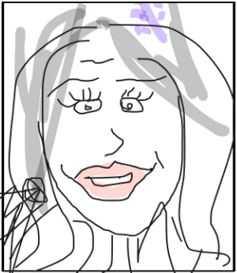
Portfolio Lead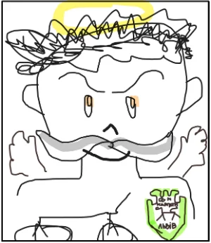
Delivery Director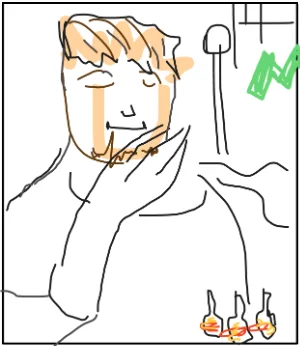
Art Director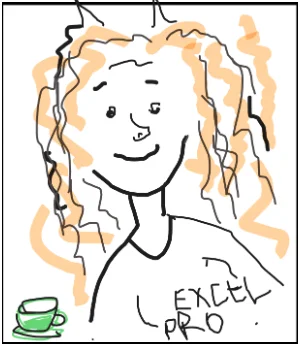
Project Manager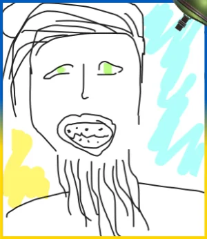
Art Director, serving in the Armed Forces
Leads
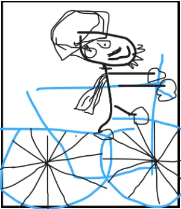
Project Lead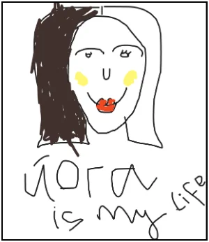
Project Lead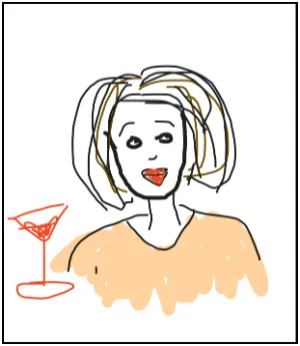
Project Lead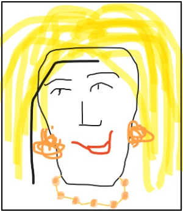
Project Lead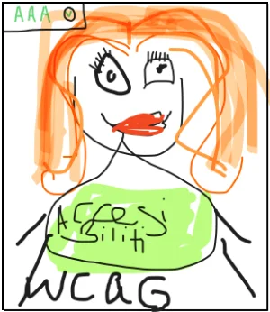
Project Lead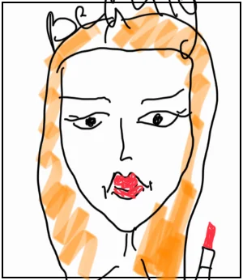
Project Lead
Designers
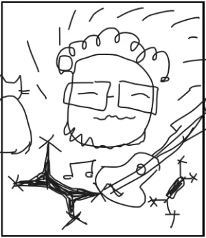
UX/UI designer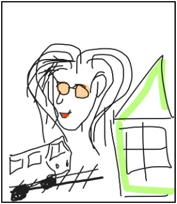
UX/UI designer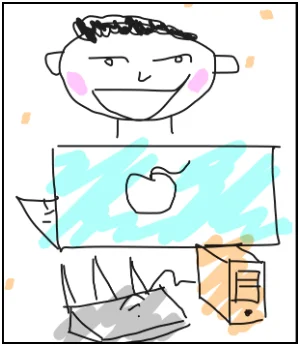
UI Front-end Developer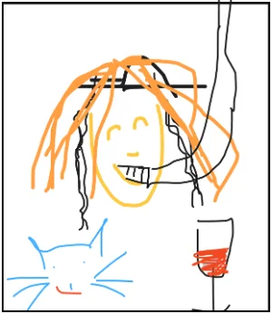
UX/UI designer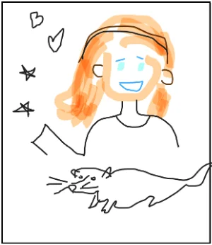
UX/UI designer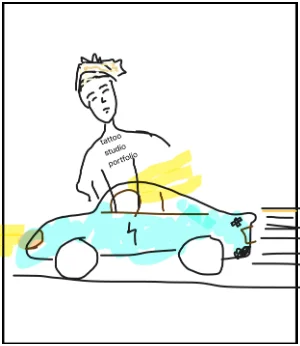
UX/UI designer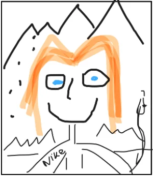
UX/UI designer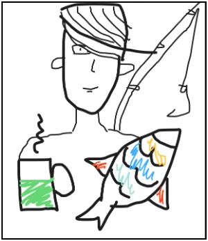
UX/UI designer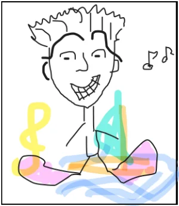
UX/UI designer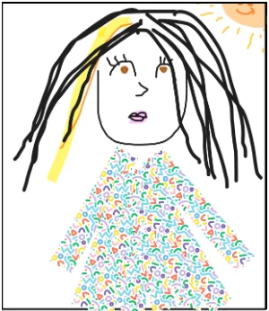
UX/UI designer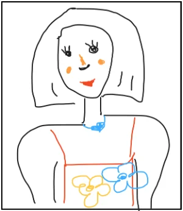
UX/UI designer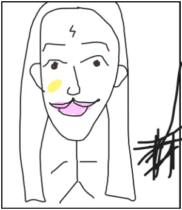
UX/UI designer
What We Do
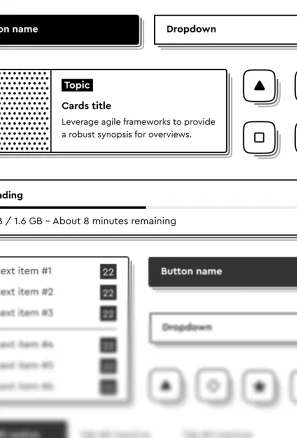
Enterprise designWe translate complex business workflows into clean, human-friendly digital experiences
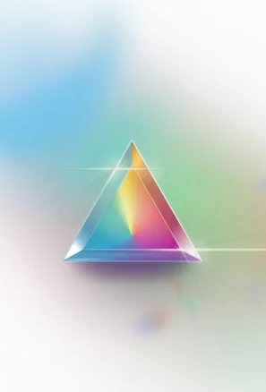
AccessibilityWe run accessibility reviews and design with empathy, making sure everyone can use what we create.
- AI-driven user interfaces
We create intuitive UIs that help users interact with AI in a way that feels natural and helpful
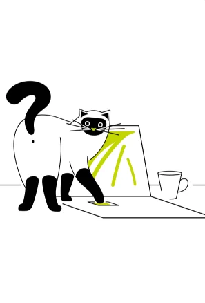
Graph design & IllustrationsWe design custom graphics and illustrations that make interfaces clearer, more engaging, and on-brand
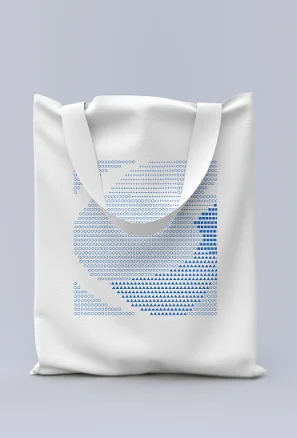
BrandingWe shape visual identities that tell stories, build trust, and support product goals
At work, we value most
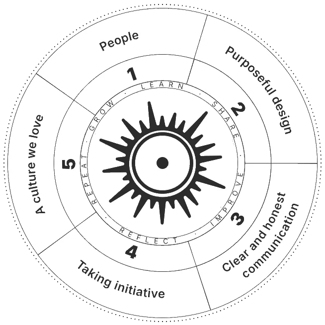
Values wheel, outer ring:
- People
- Purposeful design
- Clear and honest communication
- Taking initiative
- A culture we love
Inner ring:
- Learn
- Share
- Improve
- Reflect
- Repeat
- Grow
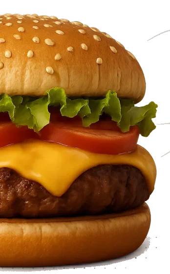
Recipe for a DX legendary Year
*from start of 25 (:
- Design Digest – 1
- Client projects – 38
- Team knowledge sharing sessions – 12
- Ideas (bravely) rejected – 104(but we loved each of them anyway)
- New teammates – 4
- Design team laughs – ∞
Best served with deadlines and a pinch of chaos
That’s all, folks
…unless you are still vibing…
DX Design playlist (YouTube, opens in a new tab)
Background music for the next sprint
Or for gently reorganising auto layouts (again)